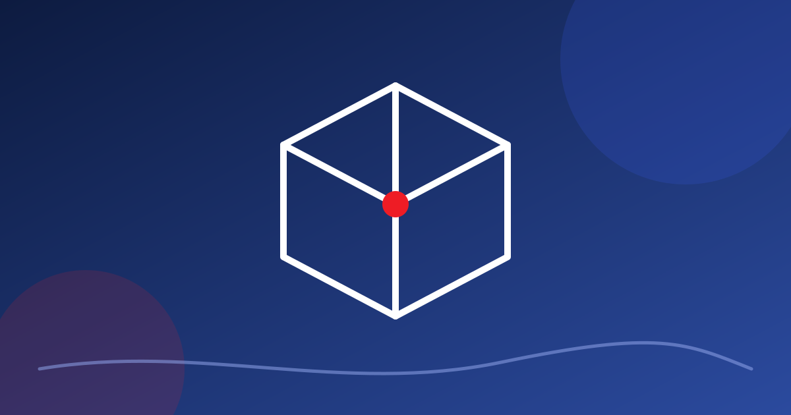

Engenharia do entretenimento · 6 minNome difícil, ideia simples: usar o raciocínio da engenharia para que o espetáculo aconteça do jeito que foi sonhado e sem ninguém se machucar. A história dessa área começa num estúdio de televisão.
Ler o texto → Engenharia do entretenimento · 4 min
Engenharia do entretenimento · 4 minDiversão é coisa menor ou é parte da cultura? De Dionísio à Escola de Frankfurt e a Hermano Vianna, o que está em jogo quando alguém diz que algo é só entretenimento.
Ler o texto →Engenharia do entretenimento · 3 minQuando o técnico entra só na véspera, a ideia mais bonita vira risco. Quando entra na primeira reunião, a técnica passa a ser parte da criação, e o espetáculo ganha em beleza e em segurança.
Ler o texto →Engenharia do entretenimento · 5 minImprovisar com pouco é uma habilidade real do produtor cultural, e existe teoria sobre isso. O problema começa quando o improviso entra onde há vida em jogo. Entenda a diferença com a ajuda de Sarasvathy e de casos brasileiros.
Ler o texto →Segurança · 7 minTreinar a equipe e comprar extintor é importante, mas está no fim da fila. Existe uma ordem de eficácia para reduzir risco, e muito produtor começa de trás para frente.
Ler o texto →Segurança · 7 minEm 1970 na França e em 2013 em Santa Maria, casas noturnas se tornaram armadilhas por motivos que se repetem. Um texto cuidadoso sobre padrões, e não sobre culpados, para que a lição fique.
Ler o texto →Segurança · 9 minQuem vai aprovar o seu evento? Entenda o que diz a Lei 13.425, como funcionam as notas técnicas do Corpo de Bombeiros (com o Rio de Janeiro como exemplo) e o que dá para preparar antes de bater na porta.
Ler o texto → Segurança · 5 min
Segurança · 5 minUma lista de perguntas práticas para o dia do evento, do laudo dos Bombeiros ao caminho de fuga da última fileira, cada uma com o motivo e o jeito de verificar. Serve para teatro, centro cultural, biblioteca e evento alugado.
Ler o texto → Segurança · 6 min
Segurança · 6 minA cadeira de rodas chegou ao espaço reservado, o ingresso foi emitido e a lei foi cumprida. Mas e se for preciso sair às pressas? Egressibilidade é o assunto que quase ninguém programa.
Ler o texto →Gestão de pessoas · 7 minMontagem de madrugada, escala sem descanso, calçado errado na cena e ninguém para avisar. Ergonomia não é cadeira boa, é desenhar o trabalho para que a equipe aguente o espetáculo e volte para o próximo.
Ler o texto →Gestão de pessoas · 5 minTodo evento tem um orçamento em reais e outro invisível, medido em sono, saúde e vontade de continuar. Entenda o que é custo humano do trabalho e por que a gestão de pessoas é, muitas vezes, o maior gargalo da produção.
Ler o texto → Gestão cultural · 6 min
Gestão cultural · 6 minProdutor cultural é quem faz a ação cultural acontecer. A profissão foi popularizada nos anos 80, oficializada nos anos 90, e hoje se organiza em três fases de trabalho. Veja também um dia de produção, num exemplo fictício.
Ler o texto → Gestão cultural · 6 min
Gestão cultural · 6 minParecem sinônimos e não são. Uma trata de como entregar, outra de para quê e com quem, a terceira do que está sendo feito. Entender a diferença evita muita confusão e explica por que o produtor cultural estranha as ferramentas de gestão.
Ler o texto → Gestão cultural · 6 min
Gestão cultural · 6 minCinco grupos de processos, dez áreas de conhecimento e muita sigla. O que sobra quando o guia mais conhecido do mundo é traduzido para a rotina de um produtor, da pré-produção à prestação de contas.
Ler o texto →
Gestão cultural · 6 minCriado para a gestão de eventos, o EMBOK tem cinco fases, cinco domínios e uma lista de valores como criatividade e ética. Veja como ele organiza a bagunça boa de um festival e como usar na produção cultural.
Ler o texto →Gestão cultural · 5 minNinguém precisa escolher um lado nem seguir um manual de ponta a ponta. Veja como combinar as duas caixas de ferramentas, o que cada uma entrega melhor e quais limites não se negociam no meio da improvisação.
Ler o texto →Fomento · 8 minLei Sarney, Lei Rouanet, ICMS, ISS, editais, marketing cultural, responsabilidade social e crowdfunding: a história das políticas culturais, cada fonte de dinheiro explicada, um quadro para comparar e um glossário das siglas.
Ler o texto →Fomento · 5 minDoar, trocar e se comprometer são coisas diferentes. Quem entende o que a empresa está buscando fala a língua certa, monta uma proposta honesta e constrói uma parceria que dura mais que uma edição. Inclui um modelo de proposta de uma página.
Ler o texto → Fomento · 5 min
Fomento · 5 minPoucas linhas de fomento, equipe informal, projeto escrito para caber em formulário. Um retrato franco das dificuldades de captar recurso e do que uma gestão básica muda em cada etapa, do projeto à prestação de contas.
Ler o texto →Fomento · 6 minResponsável técnico, laudos, brigada e atendimento médico são custos reais de qualquer evento. Onde encaixar cada um na planilha, como justificar para a comissão, um orçamento ilustrativo de evento pequeno e o que fazer quando o dinheiro não cobre.
Ler o texto →FomentoExistem três caminhos para financiar um projeto cultural no Brasil. Cada um tem lógica, prazo e cobrança diferentes, e escolher errado custa meses.
Ler o texto →FomentoNossa equipe senta em comissões de parecer há mais de dez anos. Estes são os cinco pontos que decidem a nota, edital após edital.
Ler o texto →FomentoO projeto não termina no evento. Termina quando o órgão aprova as contas. O kit que fecha qualquer projeto cabe numa pasta.
Ler o texto →